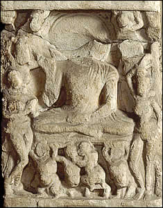

The Assault and Temptation
As Siddhartha was reaching Enlightenment, a demon-king called Mara sent an army to attack him. When the army reached Siddhartha, the demon-king challenged his generosity, goodness and piety. Siddhartha called upon the Earth as a witness to his virtues. The Earth goddess acknowledged his virtues and the army of the demon-king fled when they realised Siddhartha's great power.The demon-king then sent his three daughters to dance for Siddhartha. However, he would not be distracted and the women left him alone. This scene shows the Buddha sitting on a throne. In front of him are small figures who may represent the soldiers from the demon-king's army. On either side of the throne stands a woman. The woman on the left holds her hands in a gesture of worship. The woman on the right looks as though she is dancing. She may represent one of the demon-king's daughters. |